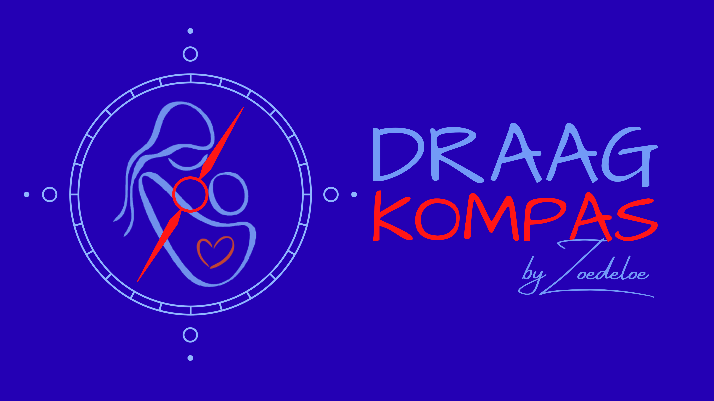

Filters – IK ZOEK
BASIS zichtbaar; geavanceerde filters zijn grijs en niet aanklikbaar.
Filters voor ouders (placeholder). Klik VERDER om de flow te testen.
Filters – IK VERGELIJK
BASIS + UITGEBREID zichtbaar; EXPERT grijs en niet aanklikbaar.
Filters voor consulenten (placeholder). Klik VERDER om de flow te testen.
RESULTATEN
Dit is een placeholder. Hier kunnen later lijst/vergelijkingen komen.
Nog geen filters geselecteerd.